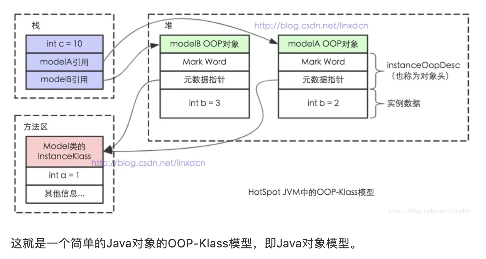

JVM内存结构 VS Java内存模型 VS Java对象模型¶
Java作为一种面向对象的，跨平台语言，其对象、内存等一直是比较难的知识点。而且很多概念的名称看起来又那么相似，很多人会傻傻分不清楚。比如本文我们要讨论的JVM内存结构、Java内存模型和Java对象模型，这就是三个截然不同的概念，但是很多人容易弄混。
可以这样说，很多高级开发甚至都搞不不清楚JVM内存结构、Java内存模型和Java对象模型这三者的概念及其间的区别。甚至我见过有些面试官自己也搞的不是太清楚。不信的话，你去网上搜索Java内存模型，还会有很多文章的内容其实介绍的是JVM内存结构。
首先，这三个概念是完全不同的三个概念。本文主要对这三个概念加以区分以及简单介绍。其中每一个知识点都可以单独写一篇文章，本文并不会深入介绍，感兴趣的朋友可以加入我的知识星球和球友们共同学习。
JVM内存结构¶
我们都知道，Java代码是要运行在虚拟机上的，而虚拟机在执行Java程序的过程中会把所管理的内存划分为若干个不同的数据区域，这些区域都有各自的用途。
其中有些区域随着虚拟机进程的启动而存在，而有些区域则依赖用户线程的启动和结束而建立和销毁。在《Java虚拟机规范（Java SE 8）》中描述了JVM运行时内存区域结构如下：
各个区域的功能不是本文重点，就不在这里详细介绍了。这里简单提几个需要特别注意的点：
1、以上是Java虚拟机规范，不同的虚拟机实现会各有不同，但是一般会遵守规范。
2、规范中定义的方法区，只是一种概念上的区域，并说明了其应该具有什么功能。但是并没有规定这个区域到底应该处于何处。所以，对于不同的虚拟机实现来说，是有一定的自由度的。
3、不同版本的方法区所处位置不同，上图中划分的是逻辑区域，并不是绝对意义上的物理区域。因为某些版本的JDK中方法区其实是在堆中实现的。
4、运行时常量池用于存放编译期生成的各种字面量和符号应用。但是，Java语言并不要求常量只有在编译期才能产生。比如在运行期，String.intern也会把新的常量放入池中。
5、除了以上介绍的JVM运行时内存外，还有一块内存区域可供使用，那就是直接内存。Java虚拟机规范并没有定义这块内存区域，所以他并不由JVM管理，是利用本地方法库直接在堆外申请的内存区域。
6、堆和栈的数据划分也不是绝对的，如HotSpot的JIT会针对对象分配做相应的优化。
如上，做个总结，JVM内存结构，由Java虚拟机规范定义。描述的是Java程序执行过程中，由JVM管理的不同数据区域。各个区域有其特定的功能。
Java内存模型¶
Java内存模型看上去和Java内存结构（JVM内存结构）差不多，很多人会误以为两者是一回事儿，这也就导致面试过程中经常答非所为。
在前面的关于JVM的内存结构的图中，我们可以看到，其中Java堆和方法区的区域是多个线程共享的数据区域。也就是说，多个线程可能可以操作保存在堆或者方法区中的同一个数据。这也就是我们常说的“Java的线程间通过共享内存进行通信”。
Java内存模型是根据英文Java Memory Model（JMM）翻译过来的。其实JMM并不像JVM内存结构一样是真实存在的。他只是一个抽象的概念。JSR-133: Java Memory Model and Thread Specification 中描述了，JMM是和多线程相关的，他描述了一组规则或规范，这个规范定义了一个线程对共享变量的写入时对另一个线程是可见的。
那么，简单总结下，Java的多线程之间是通过共享内存进行通信的，而由于采用共享内存进行通信，在通信过程中会存在一系列如可见性、原子性、顺序性等问题，而JMM就是围绕着多线程通信以及与其相关的一系列特性而建立的模型。JMM定义了一些语法集，这些语法集映射到Java语言中就是volatile、synchronized等关键字。
在JMM中，我们把多个线程间通信的共享内存称之为主内存，而在并发编程中多个线程都维护了一个自己的本地内存（这是个抽象概念），其中保存的数据是主内存中的数据拷贝。而JMM主要是控制本地内存和主内存之间的数据交互的。
在Java中，JMM是一个非常重要的概念，正是由于有了JMM，Java的并发编程才能避免很多问题。这里就不对Java内存模型做更加详细的介绍了，想了解更多的朋友可以参考《Java并发编程的艺术》。
Java对象模型¶
Java是一种面向对象的语言，而Java对象在JVM中的存储也是有一定的结构的。而这个关于Java对象自身的存储模型称之为Java对象模型。
HotSpot虚拟机中，设计了一个OOP-Klass Model。OOP（Ordinary Object Pointer）指的是普通对象指针，而Klass用来描述对象实例的具体类型。
每一个Java类，在被JVM加载的时候，JVM会给这个类创建一个instanceKlass，保存在方法区，用来在JVM层表示该Java类。当我们在Java代码中，使用new创建一个对象的时候，JVM会创建一个instanceOopDesc对象，这个对象中包含了对象头以及实例数据。

总结¶
我们再来区分下JVM内存结构、 Java内存模型 以及 Java对象模型 三个概念。
JVM内存结构，和Java虚拟机的运行时区域有关。 Java内存模型，和Java的并发编程有关。 Java对象模型，和Java对象在虚拟机中的表现形式有关。
关于这三部分内容，本文并未分别展开，因为涉及到的知识点实在太多，如果读者感兴趣，可以自行学习。后面也会发文介绍这些内容，敬请期待。